AVATAR REVIEW · 235
Hair and headwear
Revised masculine hairstyles, fitted headwear for both builds, clipped sprout and independent frame/lens colors. Rotate and zoom to inspect the details.
Model
Face
No nose · Regular smile
Headwear and details
Clothing
Lashes are a feminine comparison candidate and use the same fitted eye shapes. Curved squint remains undecided. Round and Soft square remain removed.
Every current hairstyle has an authored fit for each headwear choice. Covered styles use contextual crown or gathered-hair variants. Clear lenses preserve facial sharpness; all styles default to Dark except Reading.
Revised masculine hairstyles · Blender references
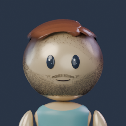
Taper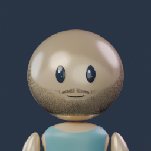
Buzz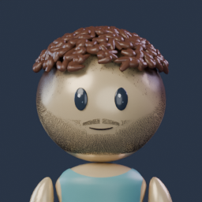
Curly top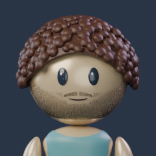
Afro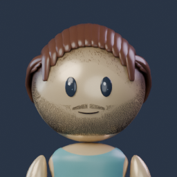
Flow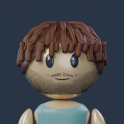
Locs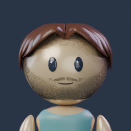
Middle partFeminine headwear · reopened export references
Use Full body to inspect the pashmina wrap and hanging ends. Closed hats use a low pony; the selected224 cap pair is retained exactly.
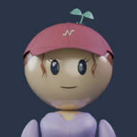
Cap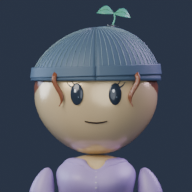
Beanie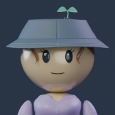
Bucket hat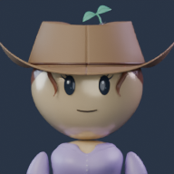
Cowboy hat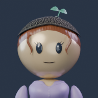
Bandana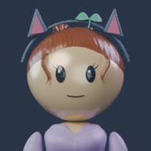
Ears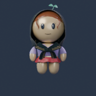
PashminaPashmina · all-angle export review
Blender references of the packed final assemblies. The rear gathers into the nape; broad hood folds converge into a loose chest knot and two soft ends. Major body forms support the fabric; smaller garment gaps are bridged. Use the live Full body view to compare tops and hairstyles.
Feminine
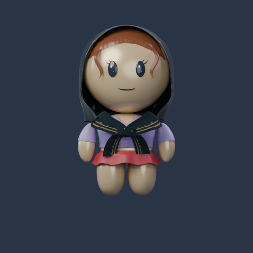
Front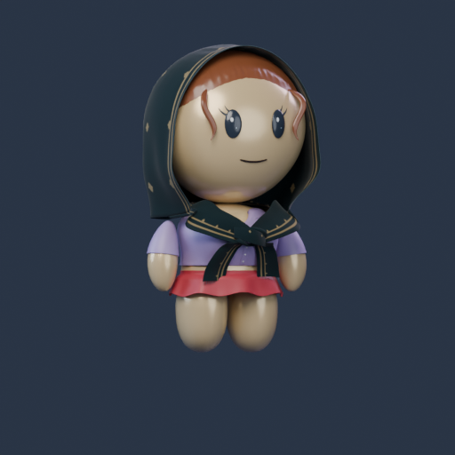
Three-quarter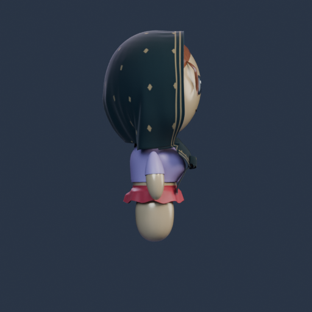
Side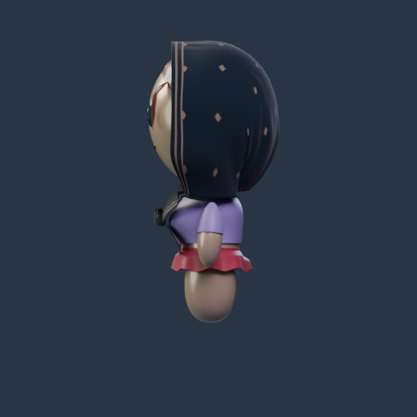
Opposite side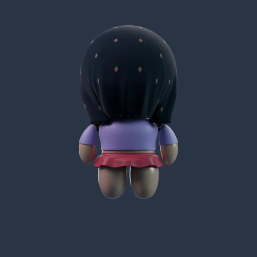
Back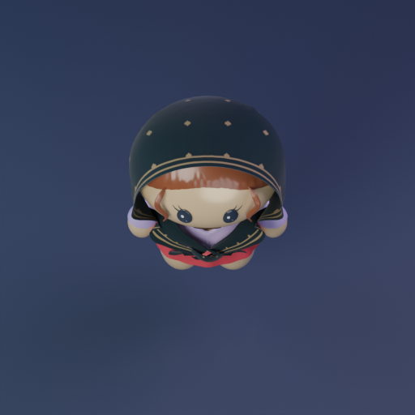
Top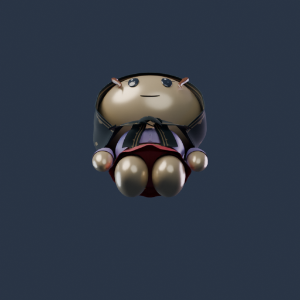
UndersideMasculine
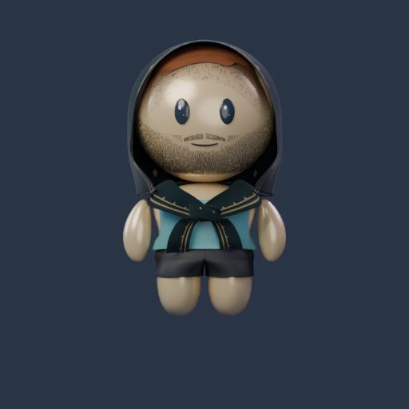
Front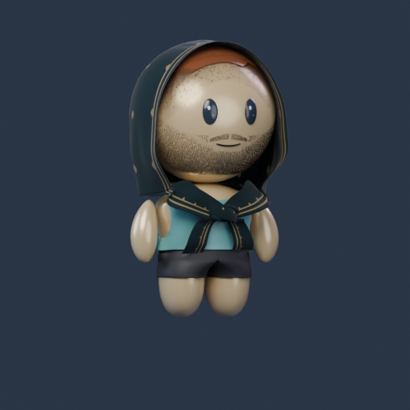
Three-quarter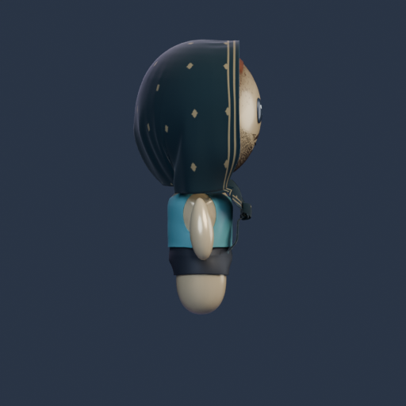
Side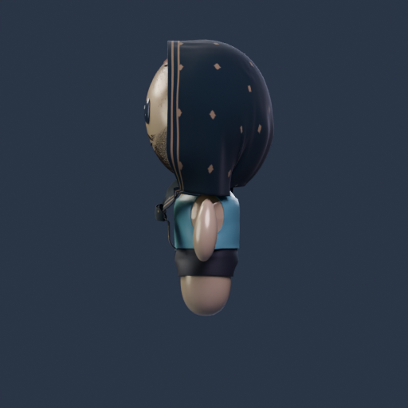
Opposite side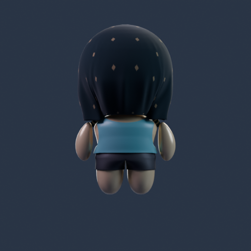
Back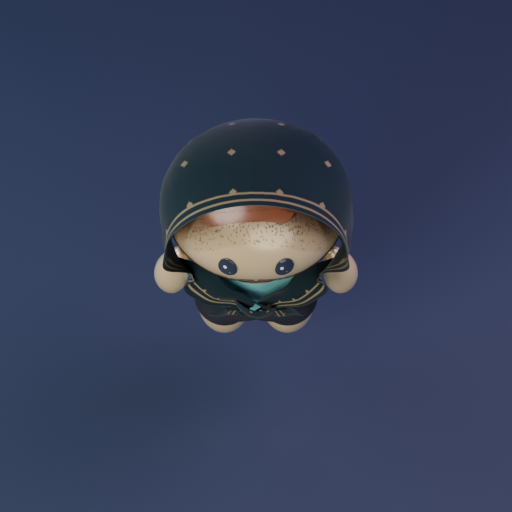
Top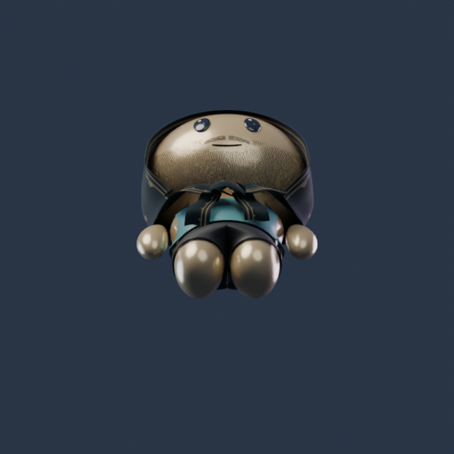
UndersideMatched face references
Fixed Blender references in Light warm, with the retained hairstyle and outfit. Feminine references show lashes. Use the live viewer to change skin, features and angles.
 Original
Original Almond
Almond Tapered oval
Tapered oval Soft hooded
Soft hooded Rounded bean
Rounded bean Curved squint
Curved squintFixed3D lighting. Browser appearance is an approximation of the Blender reference; native-app and phone qualification remain separate. No profile-byte assignments changed.